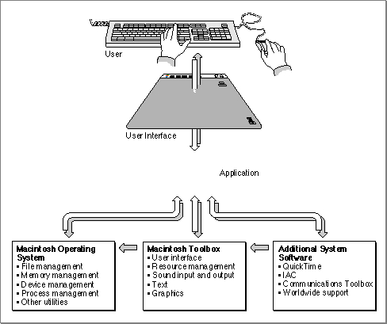
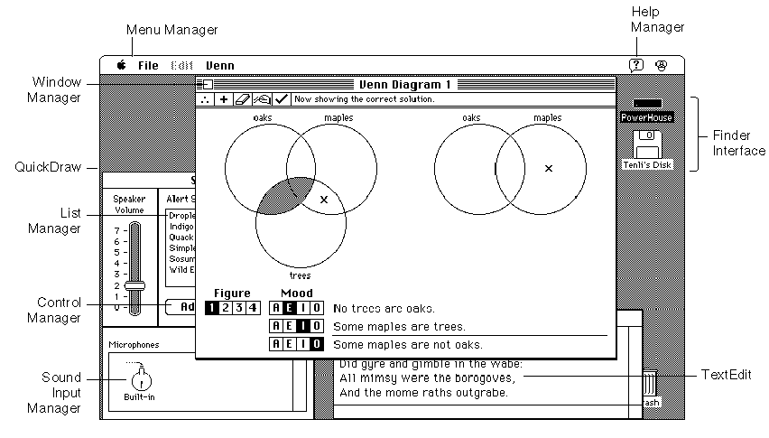
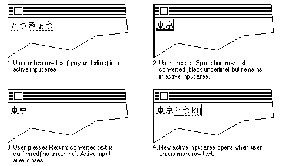
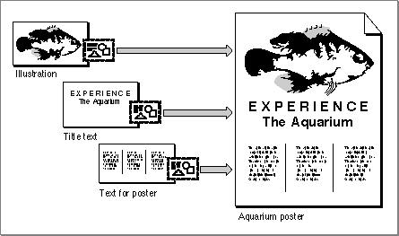
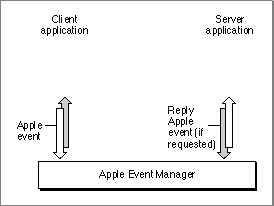
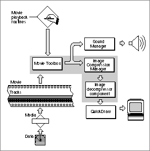

The Macintosh System Software
The richness of the Macintosh user interface is closely matched by the richness of the Macintosh system software routines. There are currently several thousand system software routines that, likeNewWindow, are available to application developers for use in writing applications for the Macintosh operating system. Fortunately, you don't need to learn all of those routines before starting to develop applications for the Macintosh. The sample application defined in Listing 1-1 uses only a dozen or so system software routines. A typical application might directly call a few hundred of these routines.The entire collection of system software routines is logically divided into functional groups--usually known as managers--that handle specific tasks or user interface elements. For example, the
NewWindowroutine belongs to the Window Manager, the part of the Macintosh system software that allows you to create, move, hide, resize, and otherwise manipulate windows. Similarly, the parts of the system software that allow you to create and manipulate menus belong to the Menu Manager.Your application calls system software routines to create standard user interface elements and to coordinate its actions with other open applications. The main other application that your application needs to work with is the Finder, which is responsible for keeping track of files and managing the user's desktop. Usually, the user launches your application by double-clicking its icon (or one of its document's icons) in a Finder window. The Finder isn't really part of the Macintosh system software, but it is such an important piece of the Macintosh graphic user interface that it's sometimes difficult to tell where the Finder ends and the systems software begins. In fact, the system software provides a set of routines--known as the Finder Interface--that you can use to interact with the Finder.
As shown in Figure 1-2, most of the system software routines are part of either the Macintosh Operating System or the Macintosh Toolbox.
Figure 1-2 Overview of the system software

This section describes the division of the Macintosh system software into its logical parts. Understanding this division of system software into managers and other units is essential to understanding Macintosh programming, as well as the general organization of Inside Macintosh.
The Macintosh Toolbox
The system software routines used in Listing 1-1 allow you to manage elements of the Macintosh user interface. These parts of the system software belong to the Macintosh Toolbox (sometimes also called the Macintosh User Interface Toolbox). By offering a common set of routines that every application can call to implement the user interface, the Toolbox not only ensures familiarity and consistency for the user, but also helps reduce your application's code size and development time. At the same time, the Toolbox offers a great deal of flexibility; your application can, whenever appropriate, use its own code instead of Toolbox routines, and it can define its own types of windows, menus, and controls. In general, however, you should use the Toolbox routines to maximize compatibility with present and future versions of the system software.Figure 1-3 illustrates the main parts of the Macintosh Toolbox.
Figure 1-3 Parts of the Macintosh Toolbox

Consider the first few lines of Listing 1-1 on page 3:
- Note
- For historical reasons, some collections of system software routines are referred to as packages. One example is the Standard File Package (which allows you to present the standard file opening and saving dialog boxes). In general, the distinction between managers and packages is unimportant. Accordingly, the new Inside Macintosh has, whenever appropriate, adopted the practice of renaming packages as managers. For instance, the Disk Initialization Manager (described in the book Inside Macintosh: Files) was previously known as the Disk Initialization Package.

InitGraf(@thePort); {initialize QuickDraw} InitFonts; {initialize Font Manager} InitWindows; {initialize Window Manager} InitCursor; {initialize cursor to arrow}These lines of code perform standard initialization of some essential Toolbox managers. You need to initialize these managers in order to set up the drawing environment for your application and to prepare parts of the Toolbox for further use. TheInitGrafprocedure initializes QuickDraw, the part of the Macintosh Toolbox that handles drawing and other graphics operations. Because the Macintosh user interface is largely a graphic user interface, QuickDraw routines are called by virtually all the other Toolbox managers. For example, the Window Manager calls QuickDraw to draw the window frame and any other required parts of a window (for instance, the title bar). For this reason, you need to initialize QuickDraw before you initialize the other main Toolbox Managers.Your application will also call QuickDraw directly, usually to draw inside a window or to set up constructs (like rectangles) that you'll need when making other Toolbox calls. QuickDraw provides a rich array of routines that let you
- Note
- QuickDraw gets its name from the fact that it's designed to perform basic graphics operations exceptionally fast. This is important for a user interface that relies so heavily on graphics.
The essential thing to keep in mind is that if you can see something on the screen, then QuickDraw is lurking somewhere behind it, either directly (you drew it there) or indirectly (you called a Toolbox routine that called QuickDraw to draw it there).
- change, hide, and display the cursor
- manipulate the current drawing port
- set characteristics of the drawing pen
- draw text
- manage colors
- define rectangles, ovals, arcs, and other basic geometric shapes
- define arbitrarily shaped regions
- perform operations on shapes and regions
The
InitFontsprocedure initializes the Font Manager, which supports the use of various character fonts when you draw text with QuickDraw. TheTextFontroutine sets the current font to that whose font number is passed as a parameter. GreetMe passes the special constantsystemFont, which requests the font used by the system (for drawing menu titles and commands in menus, for example).The
InitWindowsprocedure initializes the Window Manager, and theInitCursorprocedure (which belongs to QuickDraw) sets the cursor to the standard arrow cursor. Every application needs to call these routines before creating windows or handling any user actions.Notice that Figure 1-3 depicts a number of other Toolbox managers that are not used by GreetMe. You'll encounter many of these as you progress through this book. For now, take a look at Table 1-2 for a brief description of the most commonly used Macintosh Toolbox managers.
The Macintosh Operating System
The Macintosh Operating System provides routines that allow you to perform basic low-level tasks such as file input and output, memory management, and process and device control. The Macintosh Toolbox is a level above the Operating System and, as you've seen, provides routines that help you implement the standard Macintosh user interface for your application. The Toolbox calls the Operating System to do low-level operations, and you'll also need to call the Operating System directly yourself.The Macintosh Toolbox allows you to create and manage parts of your application's user interface, and in some sense mediates your application and the user. By contrast, the Macintosh Operating System essentially mediates your application and the Macintosh hardware. For example, you'll read and write files not by reading data directly from the medium on which they are stored, but rather by calling appropriate File Manager routines. The File Manager locates the desired data within the logical hierarchical structure of files and directories that it manages; then it calls another part of the Operating System, the Device Manager, to read or write the data on the actual physical device. The File Manager and the Device Manager thereby insulate your application from the low-level details of interacting with the available data-storage hardware.
Similarly, the Memory Manager helps you allocate and dispose of memory within your application's logical address space. The Memory Manager takes care of mapping that logical address space onto the physical address space provided by the available RAM. It also helps manage your application's memory by moving allocated blocks of memory when necessary to create space for new blocks you want to allocate. Table 1-3 briefly describes the main parts of the Macintosh Operating System.
Additional System Software Services
The Macintosh system software includes a number of other parts that don't historically belong to either the Macintosh Toolbox or the Macintosh Operating System. The system software provides an extremely powerful set of services you can use to handle text and to support the varying text-handling requirements of different languages and writing systems. Other system software components include the interapplication communications architecture, QuickTime, and the Communications Toolbox.Text Handling
Text handling on the Macintosh has two basic aspects that make it so powerful. First, it is fundamentally graphic; text is drawn as a sequence of graphic elements; therefore the full power and flexibility of the Macintosh graphic interface is available for drawing text in sophisticated ways.Second, text handling is designed to function properly across multiple languages and writing systems. As you develop applications for worldwide markets, you need to consider differences in scripts, languages, and regions. The Macintosh system software presents one of the most flexible architectures for developing applications that can support more than one script.
A script, such as Roman, Kanji, or Arabic, is a writing system for a human language such as English, Japanese, or Arabic. Scripts have different characteristics; for example, they can differ in the direction in which their characters and lines run and in the number of characters in their character sets. The way in which you need to input, display, render, and edit text may change depending on the script in use.
A Macintosh script system is a set of system resources that support text input, manipulation, and display for a given writing system. The Macintosh script management system consists of system software managers and the WorldScript extensions, which together give your application the power to create and work with text of any script system. These are the essential text-handling managers:
Figure 1-4 A multiscript line of text drawn by QuickDraw
- QuickDraw is the graphics manager of Macintosh system software. Your application makes QuickDraw calls to write text to the screen or to a printer. When QuickDraw draws text, it draws it according to the settings of the current window's graphics port record, which includes the location information and complete font information. QuickDraw can draw text of any script system. Figure 1-4 shows some of QuickDraw's text-drawing capabilities.
Figure 1-5 Input and conversion of Japanese text using the Text Services Manager
- The Font Manager supports QuickDraw by providing the fonts that QuickDraw needs, in the typefaces, sizes, and styles that QuickDraw requests. The Font Manager keeps track of all fonts available to an application, and supports fonts for all script systems.
- The Text Utilities are an integrated collection of routines for performing a variety of operations on text, ranging from sorting strings to formatting dates and times to finding word breaks. The Text Utilities work in conjunction with the Macintosh script management system and can take into account the differences in text handling among script systems. If you use these routines, you can handle text operations in a manner that is transportable to different parts of the world.
- The Script Manager is at the center of the Macintosh script management system. It initializes script systems, maintains important data structures, supports switching text input among different script systems, and provides several text-manipulation services.
- The Text Services Manager supports text service components such as input methods. If your application uses the Text Services Manager, it can support the special kinds of text input needed for 2-byte script systems such as Japanese, Chinese, and Korean. Figure 1-5 shows how you can use the Text Services Manager to convert Japanese text.

You can use the script management system to achieve any level of text-handling sophistication, from simple display of static text in one language to highly sophisticated multilanguage word processing and page layout. The simplest way to achieve basic worldwide flexibility in text handling is to use TextEdit, which provides simple text-handling capabilities for text of any script system, including multiscript text. TextEdit automatically handles text with more than one script, style, and direction. For example, TextEdit supports mixing English text (a left-to-right directional script) with Arabic text (a right-to-left directional script) in the same line (as you saw in Figure 1-4).
- Note
- For complete information on text handling, including multiscript text handling, see Inside Macintosh: Text. For information on individual script systems and how to localize your software for markets around the world, see Guide to Macintosh Software Localization.
Interapplication Communication
The interapplication communications (IAC) architecture provides a standard and extensible mechanism for communication among Macintosh applications. The IAC architecture includes these main parts:The parts of the IAC architecture depend upon each other in fairly straightforward ways. The Edition Manager uses the services of the Apple Event Manager to support dynamic data sharing. The Apple Event Manager, in turn, relies on the Event Manager to send Apple events as high-level events, and the Event Manager uses the services of the PPC Toolbox.
- The Edition Manager allows applications to automate copy and paste operations between applications, so that data can be shared dynamically.
- The Apple Event Manager allows applications to send and respond to Apple events.
- The Event Manager allows applications to send and respond to high-level events other than Apple events.
- The Program-to-Program Communications (PPC) Toolbox allows applications to exchange blocks of data with each other by reading and writing low-level message blocks. It also provides a standard user interface that allows a user working in one application to select another application with which to exchange data.
If you want your application to exchange data with another application, you'll probably use either the Edition Manager or the Apple Event Manager. The Edition Manager allows users to copy data from one application's document to another application's document, updating the information automatically when the data in the original document changes. Figure 1-6 shows how you can use the Edition Manager to create a poster whose elements (an illustration, a title, and some text) all originate in documents created by other applications. If, for example, the user changes the illustration in the original document, the copy of that illustration in the poster could be updated automatically.
Figure 1-6 Sharing dynamic data with other applications

The Apple Event Manager allows you to send and receive Apple events, which are high-level events that conform to the Apple Event Interprocess Messaging Protocol. The Apple Event Registry: Standard Suites describes a standard vocabulary of Apple events that you can use to communicate with other open applications. Typically you use Apple events to request services and information from other applications, or to provide services and information in response to such requests.
Communication between two applications that support Apple events is initiated by a client application, which sends an Apple event to request a service or information. For example, a client application might request services such as printing specific files, checking the spelling of a list of words, or performing a numerical calculation; or it might request information, such as one customer's address or a list of names and addresses of all customers living in Ohio. The application providing the service or the requested information is called a server application. The client and server applications can reside on the same local computer or on remote computers connected to a network.
Figure 1-7 shows the relationships among a client application, the Apple Event Manager, and a server application. The client application uses Apple Event Manager routines to create and send the Apple event, and the server application uses Apple Event Manager routines to interpret the Apple event and respond appropriately. If the client application so requests, the server application sends back a reply Apple event.
Figure 1-7 Sending and responding to Apple events

As you might imagine, there are many predefined kinds of Apple events, corresponding to the many services one application might request of another. Apple events are grouped into standard suites or groups of related events. Usually, you implement all the events in a given suite at the same time. The standard Apple event suites include the following:
If an Apple event is one of these standard events, the client application can construct the event and the server application can interpret it according to the standard definition for that event. To ensure that your application can respond to Apple events sent by other applications, you should support the standard Apple events that are appropriate for your application.
- The Required suite consists of four basic Apple events that your application must support if it supports any Apple events at all. These events are Open Documents, Open Application, Print Documents, and Quit Application. The Finder uses these events for launching and terminating applications.
- The Core suite consists of the basic Apple events that nearly all applications use to communicate, including Get Data, Set Data, Move, Delete, and Save. You should support all the Apple events in the Core suite that make sense for your application.
- A functional-area suite consists of a group of Apple events that support a related functional area. One example of a functional area is the Text suite, which includes events related to text processing.
- Note
- See the book Inside Macintosh: Interapplication Communication for complete details about the interapplication communications architecture.
QuickTime
QuickTime is a collection of managers and other system software components that allow your application to control time-based data. QuickTime allows you to integrate time-based data (such as video clips, animation sequences, sound sequences, or time-indexed scientific data) into your application and to let users manipulate it in the same easy, intuitive way that they manipulate other elements of the Macintosh user interface. With QuickTime, your application can allow users to display, edit, copy, and paste time-based data much as they do text and graphics.A movie is a collection of one or more streams of data, called tracks. Each track represents a stream of data of a particular type, such as video, sound, still images, or animation. Depending on the way the tracks are defined, one or more tracks can be active at certain times while the movie is playing.
QuickTime consists mainly of these pieces:
Many applications that incorporate QuickTime capabilities are interested only in playing movies. To do so, they call the Movie Toolbox, which provides routines that allow you to store, retrieve, and manipulate time-based data stored in QuickTime movies. Figure 1-8 illustrates the relationship between the various QuickTime managers and components.Figure 1-8 Playing a QuickTime movie

- Note
- See the books Inside Macintosh: QuickTime and Inside Macintosh: QuickTime Components for complete details about QuickTime.
Communications Toolbox
The Communications Toolbox is a collection of system software managers that you can use to provide your application with basic networking and communications services. You're likely to use the Communications Toolbox only if your application is specifically concerned with communication between computers. Examples of such applications include telecommunications packages and electronic bulletin board applications. By using the Communications Toolbox, you can insulate your application from the details of the actual physical connection between your computer and the remote computer.The Communications Toolbox consists of four managers:
- The Connection Manager, which you can use to create and maintain a network connection.
- The Terminal Manager, which you can use to emulate a particular terminal during a network connection.
- The File Transfer Manager, which you can use to transfer files between your computer and the remote computer to which you are connected.
- The Communications Resource Manager, which you can use to register and keep track of communications resources.
- Note
- For complete information about the Communications Toolbox, see the book Inside the Macintosh Communications Toolbox.
System Software Routines
By now, you might be wondering how these various system software routines are made available to your application. In traditional programming environments, you gain access to such special routines by linking a subroutine library--which contains the actual executable code of those routines--to your application. The code of the special routine is contained in your application, just like the code of any application-defined routine.One main drawback of such an approach is that it tends to result in very large applications. As you might imagine, the code comprising the thousands of system software routines takes up quite a bit of space. It would be impractical to link all that code, or whatever subset of it an application actually used, to each application.
Another important drawback of the traditional approach is the difficulty of revising system software routines to provide new capabilities or to fix bugs. You would need to obtain a new subroutine library and then rebuild your application so that the new code is included in it.
The original Macintosh system software circumvented these problems by adopting a fairly novel approach. The software routines that make up the Macintosh Toolbox and the Macintosh Operating System reside mainly in read-only memory (ROM), provided by special chips contained in every Macintosh computer. When your application calls a Toolbox routine like
NewWindow, the Operating System intercepts the call and executes the appropriate code contained in ROM.This mechanism provides a simple way for the Operating System to substitute the code that is executed in response to a particular system software routine. Instead of executing the ROM-based code for some routine, the Operating System might choose to load some substitute code into the computer's random-access memory (RAM); then, when your application calls the routine in question, the Operating System intercepts the call and executes that RAM-based code.
RAM-based code that substitutes for ROM-based code is called a patch. Patches are usually stored in the System file, located in the System Folder. The System file also contains collections of static data, known as resources, that applications can use to help present the standard Macintosh user interface.
The System file can also contain system software components that are not in a computer's ROM. To make one of these components available to your application, the Operating System simply loads it into RAM. This is like a patch, except that the new routines aren't replacing any existing ROM routines. Originally these sorts of RAM-based system software components were called packages; they were read into RAM only when some application called any one of the routines contained in them. However, because some of these packages have been included in later revisions of the ROM, the distinction between managers and packages has faded with time.
The current method for adding capabilities to the system software is to include the executable code of the new routines as a system extension. Extensions are stored in a special location (namely, in the Extensions folder in the System Folder) and are loaded into memory at system startup time. QuickTime, for example, is currently distributed as an extension.
When your application calls a system software routine, it doesn't matter, in general, whether the code that is executed in response resides in ROM, is a patch in RAM loaded from the System file, or is part of a RAM-based extension. It is, however, important that the appropriate code exist in at least one of these locations, because your application will crash if you attempt to call a routine that isn't defined anywhere. So, especially for code contained in extensions, you'll need to make sure that the code is present in the current operating environment before trying to call it. You can use the
Gestaltfunction to determine whether a particular part of system software is available. For details on callingGestalt, see the chapter "Gestalt Manager" in Inside Macintosh: Operating System Utilities.There is one further twist in this picture that is worth mentioning. Some routines that are declared in your development system's header files are provided by the development system itself, not by the system software. These routines, known as glue routines (or just glue), are constructed by modifying available system software routines in some way. Consider the Memory Manager function
NewHandle, which allocates a new relocatable block of memory. A call toNewHandlecompiles into an executable instruction word. When that instruction is executed, the ROM code (or its RAM patch, if one exists) reads several of the bits in that word to determine exactly what to do. If, for instance, bit 9 of the instruction word is set, the ROM code allocates a block of the requested size and then clears all the bytes in that block to 0.If you're programming in assembly language, you can set the bits of an instruction word directly. However, if you're programming in a high-level language like Pascal, you can't do that. Instead, you need to call a glue routine, in this case
NewHandleClear, that takes care of callingNewHandleand setting the appropriate bits in the instruction word. Essentially,NewHandleClearis nothing butNewHandletogether with some assembly-language code to set a bit in the instruction word. This translation is handled automatically by your development system at the time your application is compiled.You'll encounter several other kinds of glue routines. Some glue routines translate high-level routines into low-level routines. Most of the high-level File Manager routines are of this variety. There is, for example, no code in ROM or the System file corresponding to the
FSpCreatefunction. Instead, callingFSpCreateinvokes some glue code that creates a parameter block, fills out some of the fields appropriately, and then passes that parameter block to the low-level functionPBHCreate.Some other glue routines are pure assembly-language instructions which don't call any system software routines. You might use glue like this to move a function result or other data from a register onto the stack.
You don't usually need to know whether a particular routine is implemented as glue code, except when you're doing low-level assembly-language debugging. For the time being, you can consider all the routines defined in Inside Macintosh as part of the Macintosh system software.